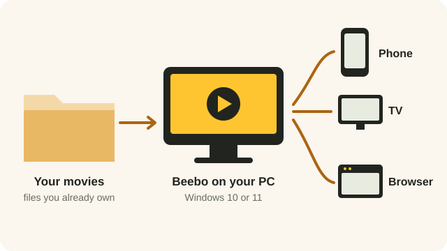
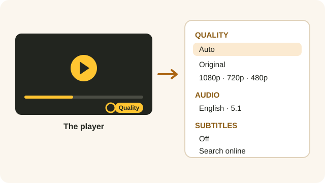
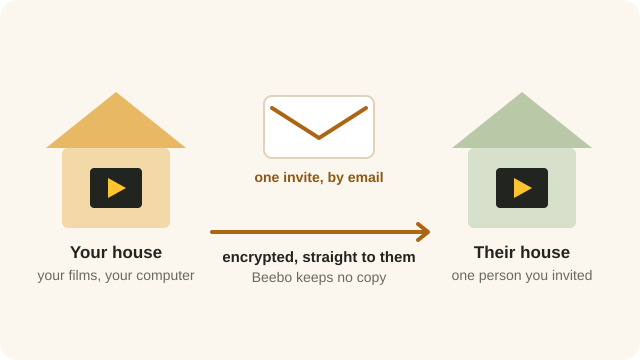

Beebo started as a way to watch your own films at home. It now looks after your music and your photos too, and gives you a say in who watches what. Here is the whole picture, in one page.

WHERE IT STARTED
Point Beebo at the folders your videos are already in. It builds a library with posters and descriptions, remembers where everyone left off, and streams it to your phone, TV and browser — at home or away.

WHILE YOU WATCH
One button in the player changes the picture quality, switches the soundtrack and turns subtitles on. On a weak connection, pick a smaller size and your home computer converts the video as it plays, using your PC’s NVIDIA, Intel or AMD video encoder when it has one.
Beebo can also look up subtitles you don’t have and save them next to your video. That part needs a free OpenSubtitles account, set up once by the owner.

NEW
Add your music folder and your albums appear next to your films, with the covers and the words from your own files. There is a queue, shuffle and repeat, it keeps playing with the screen off, and it comes with you into the car.

NEW
Beebo shows your photo folders as a timeline and as albums, and can copy your phone’s camera to your own computer on Wi-Fi. Nothing is ever deleted from the phone, and where a photo was taken is hidden unless you ask for it.

NEW
Line up a few films by hand, or set rules once — unwatched, a genre, a decade, 4K, an actor — and let Beebo keep the list up to date. There is also a quick queue for tonight: play next, add to queue.

YOUR HOUSEHOLD
Give each person their own limits: an age rating, blocked genres or titles, minutes a day and hours when Beebo is closed, kept behind a PIN only you know. The computer at home enforces it, so it holds on every screen.

ANOTHER HOUSEHOLD
Invite one person, by email, to watch your own library from their own home. You choose what they see, how many screens at once and whether they may download, and you can stop it in a moment.

FOR THE OWNER
Beebo on your PC has a Dashboard tab showing who is watching right now, what they are watching, and whether they are at home or away. If something needs to stop, you can stop it.
Now playing names the person, the title, the kind of device and where they are watching from. Streams Beebo can stop have a Stop button: their player stops and cannot start that video again for a few minutes.
Activity covers the last 7 or 30 days: how many plays, how much watch time, the most-played titles and the time each person spent.
Library shows what you have, what is missing posters, how the Beebo Inbox is getting on, and how much room is left on your disks.
Server health is about your own computer: how hard Beebo is working, how long it has been running, whether your away-from-home address is online, when you last made a backup, and anything that went wrong in the last day.
Bandwidth is the video your computer is sending out right now, the busiest moment today and the total for today. Those two daily figures start again at midnight.
It is all read from your own computer and none of it is sent anywhere. The same thing is in the phone app under Owner tools. Any admin can look; only the owner can stop a stream.
HANDS FULL
Google Assistant can start something from your own library on your Android phone, on an Android TV and in the car, and control it once it is playing: pause, resume, next episode, skip forward.
You can name a film, a show, a season and an episode, or add a year when two films share a name. Say “play Beebo” on its own and it carries on with the newest thing you were watching. Small mishearings are fine; if nothing in your library is close enough, Beebo says so rather than playing a guess.
On an Android TV, press the microphone button on the remote and say a title: matches from your library turn up in the TV’s own search results. Your Continue watching titles also appear in the TV home screen’s Continue watching row.
The app has to be signed in to your Beebo computer, because it is looking through your library. Anything a person’s parental controls hide can’t be found or played by voice either.
Amazon Alexa is not supported, and there are no plans for it.

ON THE BIG SCREEN
Beebo runs on Android TV and Google TV, casts to a Chromecast, plays your original files untouched and, in Windows 0.1.58 (Beta), converts video with your PC’s graphics card. Apps for Fire TV, Roku, Samsung, LG, Xbox and Apple devices are in development, and Beebo does not claim HDR10+, Dolby Vision, Atmos or DTS:X passthrough to a receiver, because we have not checked it on real equipment.
NEW IN WINDOWS 0.1.58 (BETA)
These are in the current Windows download, version 0.1.58, published September 21, 2026. They are new, so each carries the label Available now — Beta (Windows 0.1.58) and says what has not yet been tried on real equipment. Android app 1.40 has matching screens for several of them.
The Windows installer is still not code-signed, so Windows SmartScreen may show a warning the first time you run it.
Available now — test build (Beta): synced group music on many phones in Campsite Mode, with an optional left and right stereo pair across two phones, in the Android test build 1.40. It has not been measured on real phones yet.
In development: camping, hiking and road-trip extras: a Trail Kit for hikes, campfire cards, a story game, a night-sky guide and a passenger riddle game. Built and machine-tested, not yet in a download and not yet tried on real phones.
Available now — test build (Beta): family camping features, first in Android 1.40: a License Plate & Sign Hunt, Trip Clock, Quiet Hours and Wind-Down, Roadside Quiz packs (336 original questions), a Campfire Songbook engine and an offline Scavenger Hunt for Everyone that runs in guests’ browsers. The Songbook has no song library: only two tiny placeholder chants are built in, and you import song packs you have checked you may use. They are tested by our automated tests, not yet on real phones.
In development New family features for the separate Beebo Auto car companion (a Trip Clock glance, voice games and Roadside Stories). They are not in any download and have not been run on a real phone or in a car.

ONE THING HASN’T CHANGED
Your films, your songs and your photos stay on your own computer. Beebo has no catalogue, no ads and no trackers, and it never keeps a copy of what you watch or the pictures you back up.